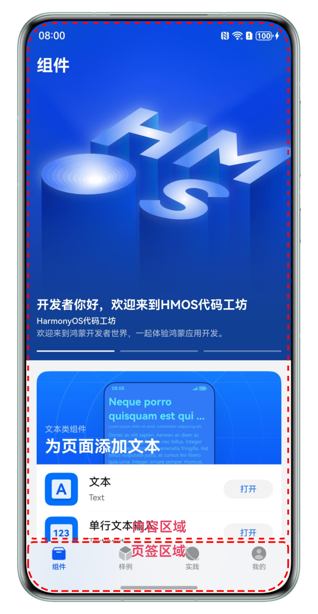

1HMOS代码工坊一多开发实践
HarmonyOS代码工坊是一个基于开发者技术演进的大型代码工程最佳实践；该应用以开发者技术地图为根，体现HarmonyOS家族式的UX设计，用来展示HarmonyOS亮点特性、关键体验特征、生态创新场景、高频开发场景等；本应用除了能在手机端正常运行，也通过“一次开发，多端部署”的原则，实现了Pad和PC/2in1的适配。下边简要介绍下在开发过程中一多的适配过程。
1.1 一多应用开发流程
一多应用开发的整体过程大致分为：UX设计->工程管理->页面开发。
- UX设计：一多的应用UX设计需遵循通用设计规则，应该考虑多设备的“差异性”、“一致性”、“灵活性”和“兼容性，以此来保障各设备上应用界面的体验，在开发过程中最大程度复用界面代码。详细规范请参见应用UX设计原则。
- 工程管理：“一多”推荐在应用开发过程中使用“三层工程结构”，以便在不同设备之间更好的实现代码复用，减少不同模块之间不必要的依赖。
- 页面开发：页面开发主要通过自适应布局和响应式布局能力来实现同一页面在不同设备上的不同显示效果，同时建议开发者多使用自定义组件，这样在增加代码可读性和可维护性的同时也可以尽可能的实现代码复用。
下面从UX设计、工程管理和页面开发三个方面来介绍HarmonyOS代码工坊应用的一多开发过程。
1.2 HarmonyOS代码工坊一多适配过程
1.2.2 工程管理
HarmonyOS代码工坊根据一多推荐的common（公共能力层）、feature（基础特性层）、product（产品定制层）的“分层架构设计规则”划分目录。
├─common // 公共能力模块 ├─features // 基础特性层 │ ├─commonbusiness // 业务公共能力模块 │ ├─componentlibrary // 组件模块 │ ├─devpractices // 样例模块 │ ├─exploration // 事件模块 │ └─mine // 我的 └─products // 产品定制层 └─phone
1.2.3 页面开发
1.2.3.2 组件列表页
组件列表页面作为app的入口页面，主要负责展示组件卡片，给用户提供不同组件的展示入口。主要包含页签区域和内容区域两部分，页签区域在手机和折叠屏展开态时会在页面底部，在Pad上会在页面左侧；内容区域会根据设备大小不同展示不同列数，详细样式见下表。
|
sm |
md |
lg |
|---|---|---|
|
 |
页签区域适配
页面整体在手机上属于上下布局，上边是内容区域，底部是页签，在折叠屏展开态和pad上页签和内容区域属于左右布局，因此页面整体使用Tabs组件，然后根据不同的断点值来改变tabBar的位置
// products/phone/src/main/ets/page/MainPage.ets
Tabs({ controller: this.tabController, index: this.currentIndex }) {
TabContent() {
ComponentListView()
}
.tabBar(this.TabItemBuilder(TABS_LIST[TabBarType.HOME]))
// ...
}
.vertical(this.globalInfoModel.currentBreakpoint === BreakpointTypeEnum.LG)
.barPosition(this.globalInfoModel.currentBreakpoint === BreakpointTypeEnum.LG ? BarPosition.Start :
BarPosition.End)
.barHeight(this.globalInfoModel.currentBreakpoint === BreakpointTypeEnum.LG ? '50%' :
this.globalInfoModel.naviIndicatorHeight + CommonConstants.TAB_BAR_HEIGHT)
.barOverlap(this.globalInfoModel.currentBreakpoint === BreakpointTypeEnum.LG ? false : true)
内容区域适配
组件列表页面内容区域在手机上是列表样式，在折叠屏展开态和pad上是顶部通栏banner，底部是通栏item，中间区域是瀑布流，因此在布局上选择的是WaterFlow容器，使用瀑布流分组WaterFlowSections实现。顶部banner组和底部item组默认FlowItem数量、列数均为1，中间瀑布流组的列数根据不同的断点分别设置为1，2，3，在组件卡片数据请求回来之后，设置瀑布流组的FlowItem数量为总卡片数量。
代码实现如下：
// features/componentlibrary/src/main/ets/viewmodel/ComponentListViewModel.ets
private componentColumnSection: SectionOptions = {
itemsCount: 0,
crossCount: new BreakpointType({
sm: 1,
md: 2,
lg: 3
}).getValue(this.globalInfoModel.currentBreakpoint),
margin: $r('sys.float.padding_level8'),
}
// ...
protected updateFlowSection() {
this.componentColumnSection.itemsCount = this.state.cardData.length;
this.componentColumnSection.crossCount = crossCount;
this.state.sections.splice(0, this.state.sections.length(),
[this.bannerColumnSection, this.componentColumnSection, this.footerSection]);
}
将上述代码中设置好的componentColumnSection数据赋值给WaterFlow组件的sections参数，即可实现瀑布流的分组显示。
// features/componentlibrary/src/main/ets/view/ComponentListView.ets
WaterFlow({
scroller: this.scroller,
sections: this.componentListState.sections
}) {
FlowItem() {
BannerCard({
// ...
})
}
Repeat(this.componentListState.cardData)
// ...
FlowItem() {
LoadingMoreItemBuilder(this.componentListState.loadingModel)
}
}
.rowsGap(new BreakpointType({
sm: $r('sys.float.padding_level8'),
md: $r('sys.float.padding_level6'),
lg: $r('sys.float.padding_level6')
}).getValue(this.globalInfoModel.currentBreakpoint))
// ...
}
1.2.3.3 样例页
样例页面以多种形态的卡片来展示sample信息，单sample有大图卡片和上图下文两种卡片样式，sample合集有列表卡片和通栏横向滑动样式效果，具体UX效果见下表。
|
sm |
md |
lg |
|---|---|---|
|
|

页面在手机上以列表形式展示，在pad上存在多种不同的样式，每个卡片的高度一致，宽度占比有1/3，2/3，3/3等多种效果，结合一多的适配规则，选择响应式布局GridRow组件来解决不同的卡片在不同设备上的动态布局问题。
在不同尺寸的设备上，按照断点分别将栅格的布局列数设置为4， 8， 12， 然后根据sample卡片的类型以及其在不同设备上的宽度占比，分别设置其所在GridCol占用栅格容器组件的列数。
代码实现如下：
GridRow({
columns: { sm: ColumnEnum.SM, md: ColumnEnum.MD, lg: ColumnEnum.LG },
gutter: { y: $r('sys.float.padding_level8'), x: $r('sys.float.padding_level8') },
direction: GridRowDirection.Row
}) {
Repeat(this.sampleCategory.sampleCards)
.templateId((item: SampleCardData) => item.cardStyleType.toString())
.template(CardStyleTypeEnum.PICTURE_ABOVE_TEXT.toString(),
(repeatItem: RepeatItem<SampleCardData>) => {
GridCol({ span: CommonConstants.SPAN_4 }) {
// ...
}
})
.template(CardStyleTypeEnum.PICTURE.toString(), (repeatItem: RepeatItem<SampleCardData>) => {
GridCol({ span: { sm: CommonConstants.SPAN_4, md: CommonConstants.SPAN_4, lg: CommonConstants.SPAN_8 } }) {
// ...
}
})
// ...
}
1.2.3.4 实践页
实践页以分组的形式来展示各个分类下的文章列表，每个分类下的文章卡片样式各不相同，UX效果见下表
|
sm |
md |
lg |
|---|---|---|
|
|

由UX效果可以看出，页面整体为纵向布局。各个分类下的文章列表，在手机端是以纵向列表样式显示，在折叠屏展开态和pad上是以不同的样式横向布局，因此整体使用纵向List布局，对于每个分类下的子卡片按照不同的样式分别使用Swiper和List组件进行布局。
下边以应用架构设计模块做简要说明。应用架构设计在手机端是以纵向列表形式展开，折叠屏展开态属于横向列表，并且屏幕内固定展示两个，第三个显示在屏幕内显示固定宽度，结合这些特点，选择使用Swiper组件进行布局。
// features/exploration/src/main/ets/component/ArchitectureCard.ets
Swiper() {
// ...
}
.nextMargin(new BreakpointType<Length>({
sm: 0,
md: $r('sys.float.padding_level6'),
lg: $r('sys.float.padding_level6')
}).getValue(this.globalInfoModel.currentBreakpoint))
.size(this.globalInfoModel.currentBreakpoint === BreakpointTypeEnum.SM ?
{ height: DiscoveryConstant.ARCHITECTURE_ITEM_HEIGHT * this.discoverContents.length } :
{ height: $r('app.float.architecture_item_height') })
.disableSwipe(this.globalInfoModel.currentBreakpoint === BreakpointTypeEnum.SM) // 纵向布局时全部铺开无需滑动
.vertical(this.globalInfoModel.currentBreakpoint === BreakpointTypeEnum.SM) // 手机端设置为纵向布局， 折叠屏展开态和pad设置为横向滑动
.displayCount(
new BreakpointType({
sm: this.discoverContents.length, // 纵向滑动时展示数量为数据源的总数量
md: CommonConstants.LANE_MD,
lg: CommonConstants.LANE_LG
}).getValue(this.globalInfoModel.currentBreakpoint)
)
1.2.3.5 组件详情页
组件详情页包含组件效果预览区域、组件属性调整区域、示例代码和相关推荐，具体效果见下表。
|
sm |
md |
lg |
|---|---|---|
|
|

手机端页面属于是上下布局，在折叠屏展开态和pad上组件预览区域和其他区域属于左右布局，因此，页面整体布局使用弹性布局Flex组件以便能在不同尺寸的设备上灵活设置布局方向。
将页面内容分为组件预览区域和其他区域两部分，手机端使用上下布局样式，设置Flex组件的direction参数为FlexDirection.Column，折叠屏展开态和pad上通过设置direction参数为FlexDirection.Row来实现左右布局。
// features/componentlibrary/src/main/ets/component/DetailContentView.ets
Flex({
direction: this.globalInfoModel.currentBreakpoint === BreakpointTypeEnum.SM ? FlexDirection.Column :
FlexDirection.Row
}) {
Column() {
// ...
}
Column() {
// ...
}
}
1.2.3.6 资源使用
HarmonyOS代码工坊中，各个页面在多端显示的效果不同，使用的资源也需要随着屏幕尺寸变化，推荐使用媒体查询获取资源的方式来做适配，借助媒体查询中的断点功能做简单的封装。下面以横向断点做简单介绍。
创建BreakpointType类，通过getValue()方法获取对应的资源值。在使用时，创建不同的资源文件传入BreakpointType代表sm、md和lg断点下的资源值，实现应用窗口大小变化时的不同效果。
// common/src/main/ets/util/BreakpointSystem.ets
export class BreakpointType<T> {
xs: T;
sm: T;
md: T;
lg: T;
constructor(param: BreakpointTypes<T>) {
this.xs = param.xs || param.sm;
this.sm = param.sm;
this.md = param.md;
this.lg = param.lg;
}
getValue(currentBreakpoint: string): T {
if (currentBreakpoint === BreakpointTypeEnum.XS) {
return this.xs;
}
if (currentBreakpoint === BreakpointTypeEnum.SM) {
return this.sm;
}
if (currentBreakpoint === BreakpointTypeEnum.MD) {
return this.md;
}
return this.lg;
}
}
例如断网状态的暂未图片在不同设备上显示的尺寸大小不一样。效果如下：
|
sm |
md |
lg |
|---|---|---|
代码实现如下：
// common/src/main/ets/view/NoNetworkView.ets
export function NoNetworkView(breakpoint: BreakpointTypeEnum, handleReload?: () => void) {
GridRow({ columns: { sm: ColumnEnum.SM, md: ColumnEnum.MD, lg: ColumnEnum.LG } }) {
GridCol({
span: { sm: CommonConstants.SPAN_4, md: CommonConstants.SPAN_6, lg: CommonConstants.SPAN_6 },
offset: { sm: 0, md: 1, lg: CommonConstants.SPAN_3 }
}) {
Column() {
Column() {
Image($r('app.media.ic_failure'))
.width(new BreakpointType({
sm: $r('app.float.failure_size_sm'),
md: $r('app.float.failure_size_md'),
lg: $r('app.float.failure_size_lg')
}).getValue(breakpoint))
.aspectRatio(1)
// ...
}
// ...
}
}
}
}